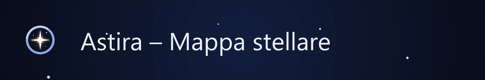
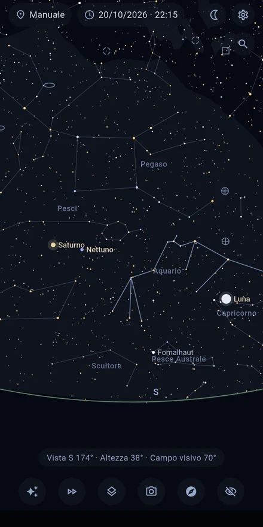
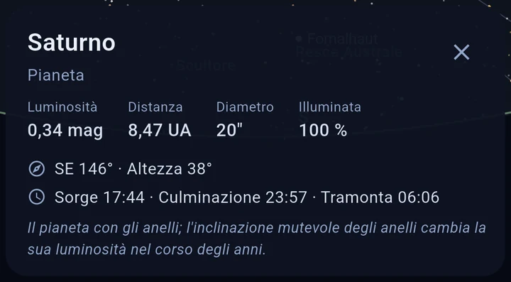
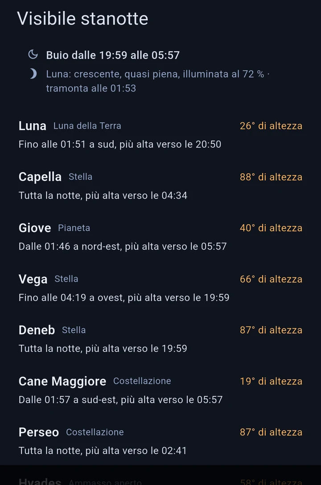
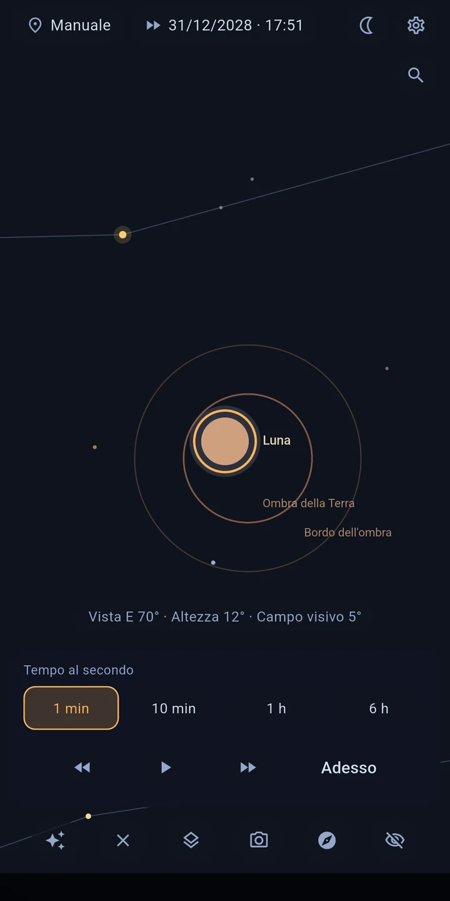

IL CIELO SEGUE IL TUO MOVIMENTO
Nella modalità dal vivo il sensore di orientamento guida la vista: muovi il dispositivo e la mappa si muove con te — in modo fluido e con la correzione della declinazione magnetica della tua posizione. Preferisci il modo classico? Esplora il cielo trascinando e pizzicando per ingrandire.

TOCCA E CAPISCI
Tocca un oggetto per saperne di più senza uscire dalla vista: nome proprio e sigla di catalogo, distanza, luminosità, classe spettrale e temperatura, e per molte stelle luminose anche raggio e massa — insieme agli orari di levata, culminazione e tramonto per il tuo luogo.

TROVA QUELLO CHE CERCHI
Cerca stelle, pianeti, costellazioni e oggetti del cielo profondo per nome o numero di catalogo — M 31, NGC 224 e Andromeda portano allo stesso oggetto. Fuori dallo schermo, una freccia indica strada e angolo. E se non sai che cosa cercare: «Visibile stanotte» elenca gli oggetti più interessanti della notte, con altezza e finestra di osservazione. Un ingresso nell'astronomia senza conoscenze pregresse, e al primo avvio un breve giro guidato ti mostra i comandi.

CHE COSA VEDRAI
- Circa 8.900 stelle — tutte quelle visibili a occhio nudo (fino alla magnitudine 6,5)
- Il Sole, la Luna (con la sua fase) e tutti i pianeti, con visibilità e stato del crepuscolo
- Tutti i 109 oggetti Messier e altre galassie, nebulose e ammassi luminosi
- Livelli attivabili: costellazioni, Via Lattea, sistema solare, eclittica, traiettorie orbitali (±30 giorni)
- Posizione via GPS o inserita a mano, momento liberamente regolabile — guarda oggi il cielo di domani
IL TEMPO IN ACCELERATO
Il time lapse ti mostra le stelle attraversare il cielo, nei due sensi. Vedi tramontare un oggetto, percorri un'intera notte, segui la Luna nelle sue fasi.
ECLISSI DI SOLE E DI LUNA
Astira calcola quali eclissi sono visibili dal tuo luogo: quando iniziano e quanta parte viene coperta. Un tocco e segui l'eclissi nel time lapse.

ALLINEAMENTO PRECISO
La mappa è un po' fuori posto? Succede a ogni bussola da telefono. Punta una stella che conosci, toccala, premi «Allinea qui» — fatto. La mappa coincide con il tuo cielo invece di lasciarti indovinare.
IL CIELO SOPRA CIÒ CHE TI CIRCONDA
Attiva l'immagine della fotocamera e la mappa si posa su ciò che hai davvero davanti: l'orizzonte, gli alberi, i tetti. Punti semplicemente il dispositivo dove cerchi. L'immagine viene solo mostrata: mai acquisita, salvata o trasmessa.
PENSATA PER OSSERVARE
- La modalità notturna in rosso intenso conserva il tuo adattamento al buio
- Lo schermo resta acceso mentre osservi
- Stelle con colori realistici (secondo l'indice di colore) e dimensione in base alla luminosità
- Limite di magnitudine regolabile, distanze in anni luce o parsec
COMPLETAMENTE OFFLINE — E RISERVATA
Astira non ha bisogno di internet: tutti i calcoli avvengono sul tuo dispositivo. L'applicazione non ha l'autorizzazione a internet, non mostra pubblicità e non contiene alcun tracciamento. La tua posizione serve solo sul dispositivo per calcolare la vista del cielo — perfetto anche per i luoghi di osservazione lontani dalla città (e dalla rete).
PRECISIONE
Il calcolo delle posizioni segue i metodi standard della letteratura astronomica — le posizioni dei pianeti si discostano di meno di un minuto d'arco dal riferimento JPL.
FONTI DEI DATI
Catalogo stellare: banca dati HYG (CC BY-SA) · Oggetti del cielo profondo: OpenNGC (CC BY-SA) · Dettagli nella schermata dei crediti dell'applicazione.
Nota: la precisione della bussola di uno smartphone è tipicamente di ±5–10°. Con la calibrazione guidata e l'allineamento su una stella riconoscerai comunque ogni oggetto con sicurezza.